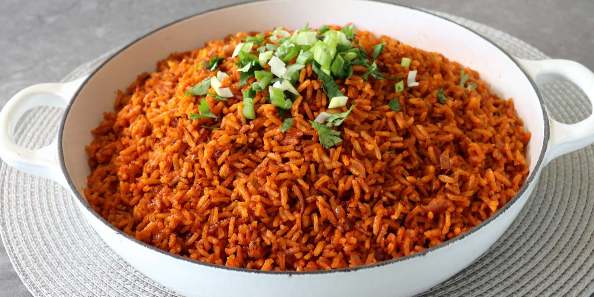

Jollof Rice recipe

Description
Jollof rice is a vibrant, spicy, and flavorful one-pot West African
dish made by cooking long-grain rice in a rich, caramelized base of
blended tomatoes, bell peppers, onions, and spices. It is a staple
celebration meal known for its deep red color, aromatic scent, and
perfect, fluffy individual grains.
Ingredients
- Rice: 4 cups of long-grain parboiled or Basmati rice
- Tomato-Pepper Blend: 6 plum tomatoes, 4 red bell peppers (tatashe), 2 scotch bonnets (habanero), 2 onions, 1 garlic clove, and 1 thumb of ginger
- Stew Base: 1/4 cup tomato paste, and 1 diced onion
- Stock & Oil: 1/2 cup vegetable oil, 2.5 to 3 cups of concentrated meat stock (chicken or beef)
- Seasonings & Spices: Curry powder, dried thyme, bay leaves, white pepper, and bouillon/seasoning cubes
Steps
- Blend and Reduce the Pepper Mix
- Prepare Your Meat (Optional but Recommended)
- Fry the Stew Base
- Add the Rice, Stock and Water
- Allow the rice to steam undisturbed on low heat for about 20-25 minutes.
- Fluff and Smoke
Home